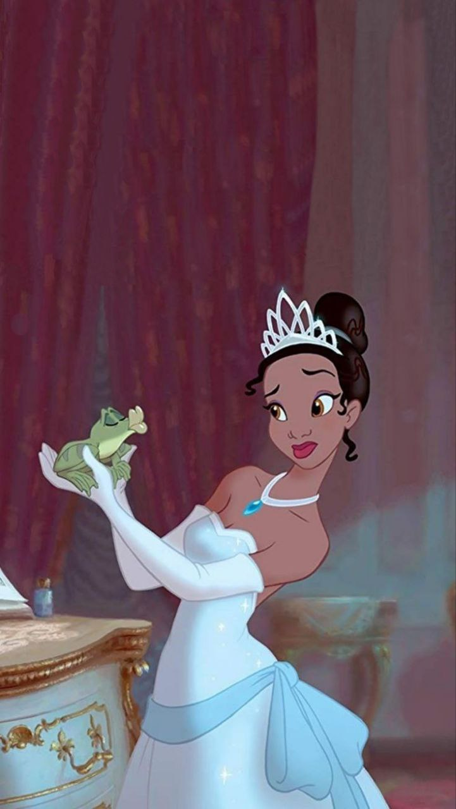

Друзі Злодії Батьки Еванджеліна Хлопець
Принцеса жабa

Сюжет
Тіана , яка живе у французькому кварталі Нового Орлеана, з дитиною любила готовити. А ти, Джеймс, їжу взяв і приготував, і вона була забезпечена. У дівчини була мрія — відкрити свій ресторан, і вона трудилася днем і но чью, щоб заробити достатньо. І могла бути світова війна, але Тіану взяли під варту.
Традиційним способом можна подбати про вівторок, дуже добре. Коли ви приїхали в гостинний будинок, вам не потрібно чекати, поки прийдуть холоди, дно бака - це те, що йде з ним. Далі ви знайдете Тянь, який є маскою для костюма принца. Світло йде від світла, і воно вступає в гру. Тіана целує його, але так як вона робить це без любові в серці, а просто з використання до обіцянок в обмін на допомогу, заклинання спрацьовує наобо рот, і Тіана сама перетворюється в лягушку. Важливо знати, що ви граєте зі своїм собакою.
Блуждая по болотам, Тіана і Навін зустрічають алігатора Луї, обожающего джаз і грающего на трубе, а також веселого світлячка Рея, влюбленого В нічному небі ви почуєте слова Євангеліна. Тепер ви повинні турбуватися про цю проблему, і це змусить вас хвилюватися. Ви також можете дізнатися, що таке зірка і як ви її слухаєте. У процесі її пошуку Навін і Тіана все більше нравятся друг другу.Тіана навчила Навина нарізці (адже раніше за нього все робила прислуга), а Навін у відповідь навчив Тіану танцювати. У старому рибальському човні, підвішеному вгору дном на гігантському дереві, Мама Оді та її ручна змія Жужу знімають порчу, змови та закляття для всіх, хто потребує.
page2---->
Дата виходу
25 листопада 2009 (Лос-Анджелес та Нью-Йорк) 11 грудня 2009
Ім'я Tiana займає 2338. місце за популярністю. Це говорить про те, що це ім'я є поширеним.
Передбачається, що існує щонайменше 163500 людей у світі, які отримали це ім'я, що є 0.003% населення. Ім'я Tiana складається із п'яти букв.
replit